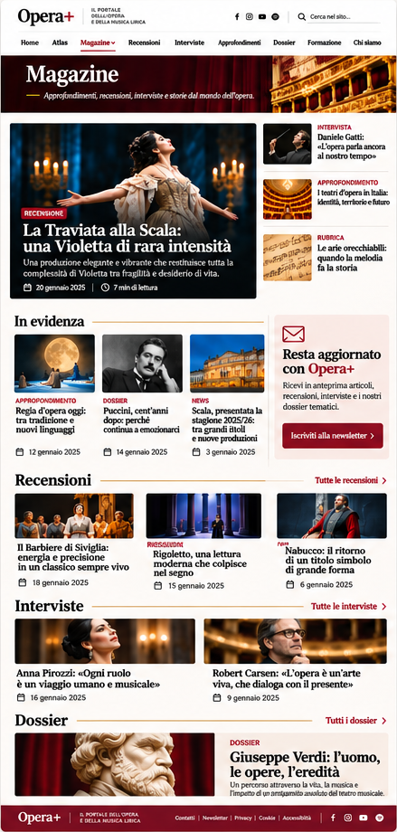
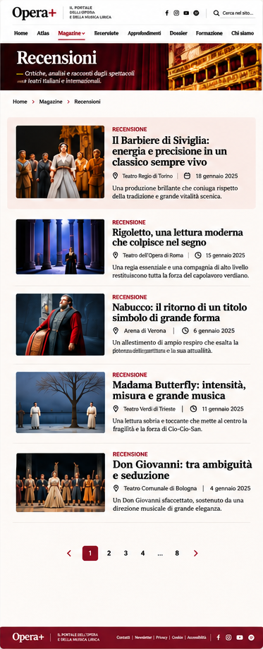
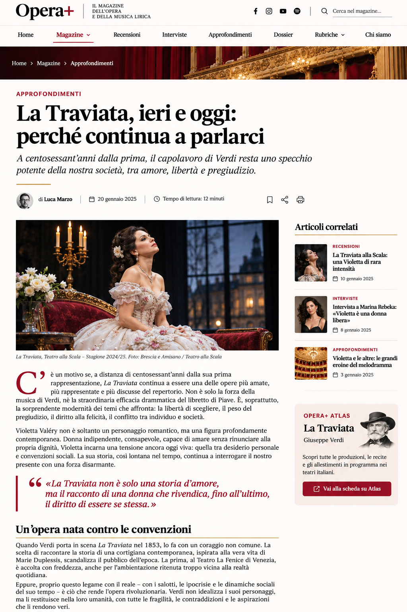
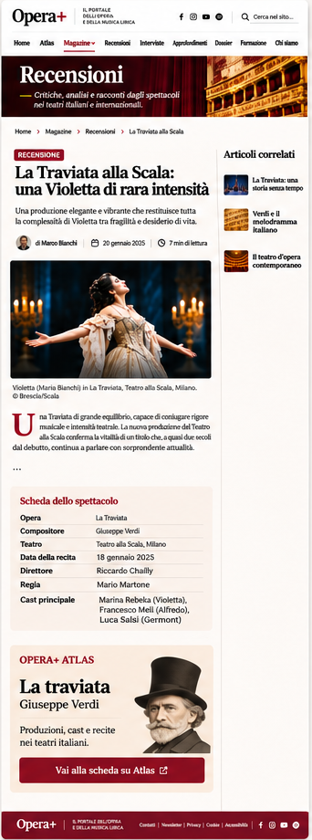
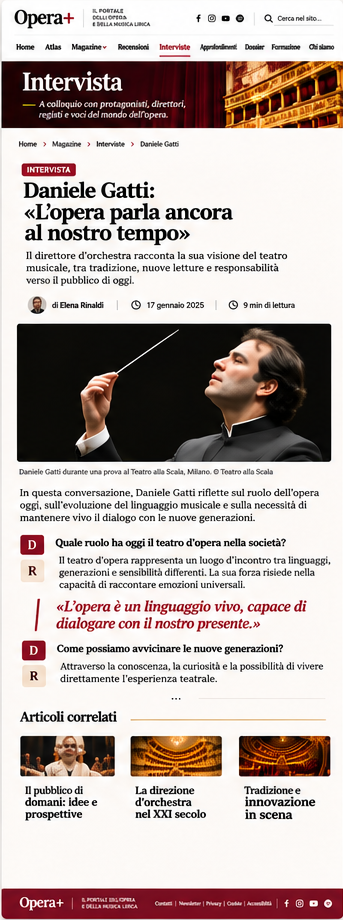

REVISIONE GRAFICA · 25 NOVEMBRE 2026
Tavole Magazine
15 riferimenti, 8 proposte HTML complete. Originali conservati. Approvazione delle tavole residue e collaudo manuale separati.


UX-01 · HomepageOriginale archiviato · approvazione da registrare


UX-02 · Categoria elencoOriginale archiviato · approvazione da registrare
UX-03 · Categoria grigliaNuova tavola completa · Desktop · griglia uniforme


UX-04 · ArticoloOriginale archiviato · approvazione da registrare
UX-05 · LongformNuova tavola completa · Desktop · articolo di approfondimento


UX-06 · RecensioneOriginale archiviato · approvazione da registrare


UX-07 · IntervistaOriginale archiviato · approvazione da registrare
UX-08 · DossierNuova tavola completa · Desktop · raccolta tematica
UX-09 · ArchivioNuova tavola completa · Desktop · archivio nativo
UX-10 · AutoreNuova tavola completa · Desktop · profilo editoriale pubblico
UX-11 · Homepage mobileNuova tavola completa · Mobile · 390 px, verifica a 320 px
UX-12 · Articolo mobileNuova tavola completa · Mobile · 390 px, verifica a 320 px
UX-13 · Tema scuroNuova tavola completa · Desktop · homepage e contrasto
UX-14 · Atlas
Già approvata
UX-15 · Newsletter / CTA
Già approvata